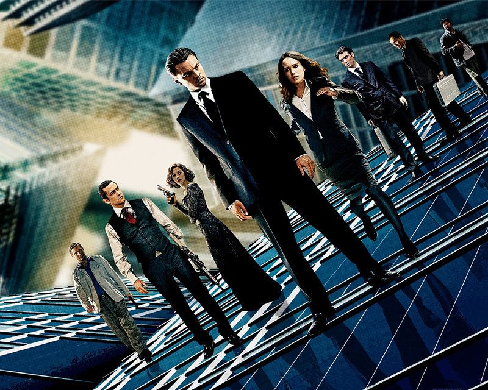
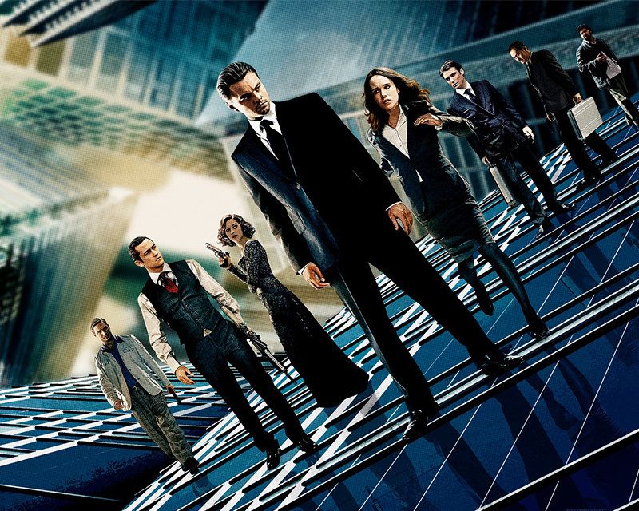

THE DREAM
Dreams are the sensory representations of an individual's subconscious, and are present in every living person. Through dream sharing, dreams can be manufactured within other individuals' minds.
There are three types of roles in dreams:
Dreamer: The Dreamer creates and maintains the dream space.
Subject: The Subject populates the dream space with projections of his or her subconscious.
Other Sleepers: Sleepers can manipulate reality within dreams, but not the fundamental structure of the dream.
The Extraction process is possible thanks to how the mind works when people are sleeping. When dreaming, individuals create and perceive our world simultaneously. The mind makes it so well that the dreamer is not aware of the change. That allows the Extractors to get right in the middle of that process.
When a Extraction team is working, the Subject never knows he is dreaming, like in normal dreams. But the Dreamers can tell to the Subject that he is dreaming; when the Subject understands he's dreaming, the strange things that happen in the Dream happen again, to show the Subject he's actually Dreaming. This tactic is known as Mr. Charles, and it's used to turn the Subject against his own subconscious, but it has a failure; when the Subject is convinced that he's Dreaming, the subconscious automatically looks for the Dreamer.
Outside of the manufactured dreams exists Limbo, a shared dream space with no single dreamer. This space is the deepest anyone can travel within the mind. It is described as "raw and infinite subconscious".